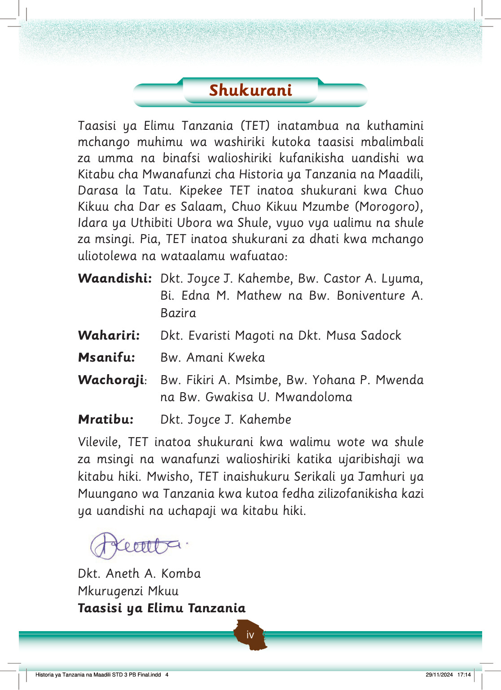

Shukurani
Taasisi ya Elimu Tanzania (TET) inatambua na kuthamini mchango muhimu wa washiriki kutoka taasisi mbalimbali za umma na binafsi walioshiriki kufanikisha uandishi wa Kitabu cha Mwanafunzi cha Historia ya Tanzania na Maadili, Darasa la Tatu.
Kipekee TET inatoa shukurani kwa Chuo Kikuu cha Dar es Salaam, Chuo Kikuu Mzumbe (Morogoro), Idara ya Uthibiti Ubora wa Shule, vyuo vya ualimu na shule za msingi.
Pia, TET inatoa shukurani za dhati kwa mchango uliotolewa na wataalamu wafuatao:
Waandishi:
Dkt. Joyce J. Kahembe, Bw. Castor A. Lyuma, Bi. Edna M. Mathew na Bw. Boniventure A. Bazira
Wahariri:
Dkt. Evaristi Magoti na Dkt. Musa Sadock
Msanifu:
Bw. Amani Kweka
Wachoraji:
Bw. Fikiri A. Msimbe, Bw. Yohana P. Mwenda na Bw. Gwakisa U. Mwandoloma
Mratibu:
Dkt. Joyce J. Kahembe
Vilevile, TET inatoa shukurani kwa walimu wote wa shule za msingi na wanafunzi walioshiriki katika ujaribishaji wa kitabu hiki.
Mwisho, TET inaishukuru Serikali ya Jamhuri ya Muungano wa Tanzania kwa kutoa fedha zilizofanikisha kazi ya uandishi na uchapaji wa kitabu hiki.
Dkt. Aneth A. Komba
Mkurugenzi Mkuu
Taasisi ya Elimu Tanzania
Historia ya Tanzania na Maadili STD 3 PB Final.indd 4
29/11/2024 17:14